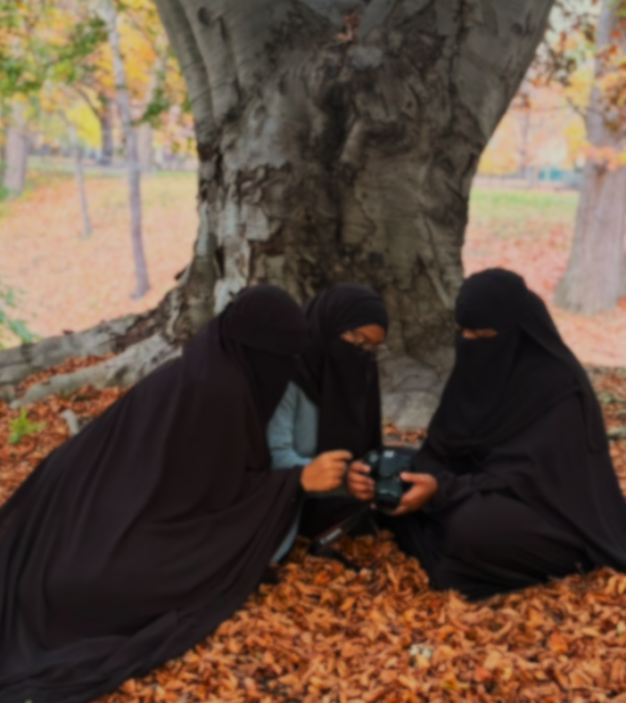

Yasmine W.
Co-Founder
About Us
Get to know the sisterhood behind Banāt al-Ummah, united by faith, friendship, and a shared pursuit of beneficial knowledge.
OUR BACKGROUND
Banat Al-Ummah began with a shared desire to seek beneficial Islamic knowledge and strengthen the bonds of sisterhood for the sake of Allah.
What began as a collective educational aspiration developed into a broader mission: creating opportunities for groups of Muslim women to pursue Islamic education, strengthen their understanding of the deen, and bring that knowledge back to benefit their communities.
Our inaugural initiative focuses on supporting a group of Muslim women traveling abroad in summer 2027 to study Arabic, Qur'an, and Islamic knowledge, inshaAllah.
Through this journey and those that may follow, we hope to make beneficial knowledge more accessible while encouraging a lasting tradition of learning, service, and community connection.
OUR FOUNDING TEAM
Meet the women who established Banat Al-Ummah with a shared commitment to seeking beneficial knowledge and creating educational opportunities for Muslim women.
Co-Founder

Co-Founder

Co-Founder
OUR DIRECTOR
Director
SUMMER 2027
Get to know the women preparing to pursue beneficial Islamic knowledge through Banat Al-Ummah's inaugural educational journey. The group plans to study in Egypt, followed by an educational retreat in Bosnia, inshaAllah.
Current initiative · Summer 2027 · Fundraising goal: $30,000
Meet Yasmine W
Sponsored Student | Summer 2027
Assalamu alaikum warahmatulallhi wabarakatu! I'm Yasmine, and I have a sincere desire to continue growing in my faith and seeking beneficial knowledge. I hope to take this opportunity to learn in an environment where I can focus on my studies, ask questions, and develop a deeper understanding of Islam and the Qur'an.

Meet Annika C
Sponsored Student | Summer 2027
Assalamu alaikum! I'm Annika. I believe that seeking knowledge is a lifelong journey, and I'm excited about the opportunity to step outside my usual routine and dedicate time to learning more about my deen. There's so much beauty and wisdom in Islam, and I hope to continue discovering it through both studying and personal experiences.
As the first sponsored participant outside Banat Al-Ummah's founding team, Annika represents an early step toward the organization's broader mission of supporting Muslim women in their pursuit of beneficial knowledge.
Meet Anngel J
Sponsored Student | Summer 2027
Assalamualaikum Warahmatullah! I'm Anngel, and I'm hoping to use this opportunity to grow in my knowledge of Islam, especially the Arabic language. I want to continue learning and strengthening my relationship with Allah, while putting what I learn into practice in my everyday life.
Meet Kamilah L
Sponsored Student | Summer 2027
Assalamu'alaikum wa rahmatullahi wa barakatuh! I'm Kamilah, and I'm looking forward to experiencing a new environment where I can immerse myself in learning about Islam. I believe that knowledge becomes even more meaningful when we put it into practice, and I hope this journey helps me grow not only in what I know but also in how I live.

We hope to strengthen our knowledge, our connection to the Qur’an, and our ability to benefit our communities.
Banāt al-Ummah
Explore Our JourneySUPPORT OUR MISSION
Your contribution supports our current educational initiative and helps us work toward creating lasting opportunities for Muslim women seeking Islamic knowledge.
♡ Support Our Mission